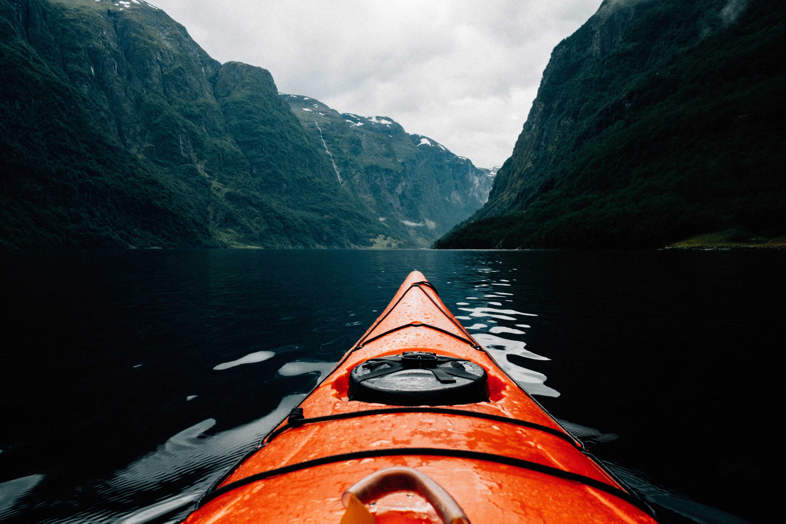

Leave Work behind and get out on the water
Rent a paddleboard or kayak and explore Cape towns beauty!
At Cape Town watersports, we have the perfexct gear for your outdoor adventures on the clear glassy waters of Cape Town, South Africa Be sure to stop by and explore our paddleboards, kayaks and accessories or to say hi!
View Options Contact UsOther Activities in Cape Town

Elevate your travel experience with a visit to the iconic Table Mountain, a natural wonder that graces the heart of Cape Town. With its breathtaking beauty and rich history, Table Mountain stands as an emblem of Cape Town's charm and allure.
Embark on an aquatic adventure like no other at the Two Oceans Aquarium, nestled in the heart of Cape Town. Immerse yourself in a world of marine marvels and uncover the mysteries of our planet's oceans.